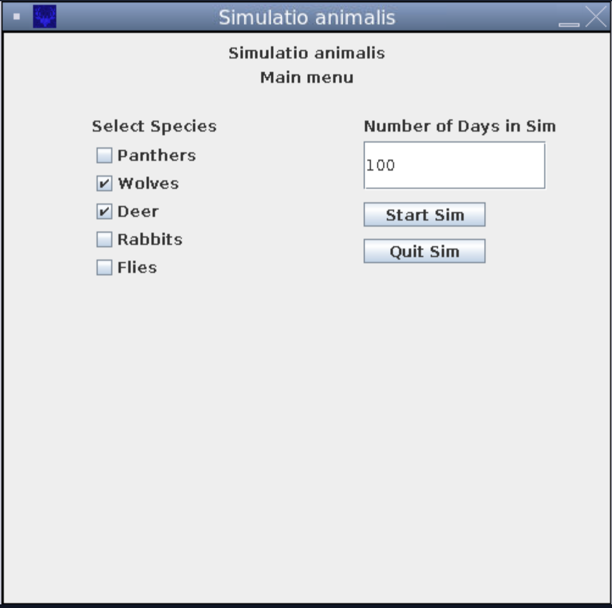
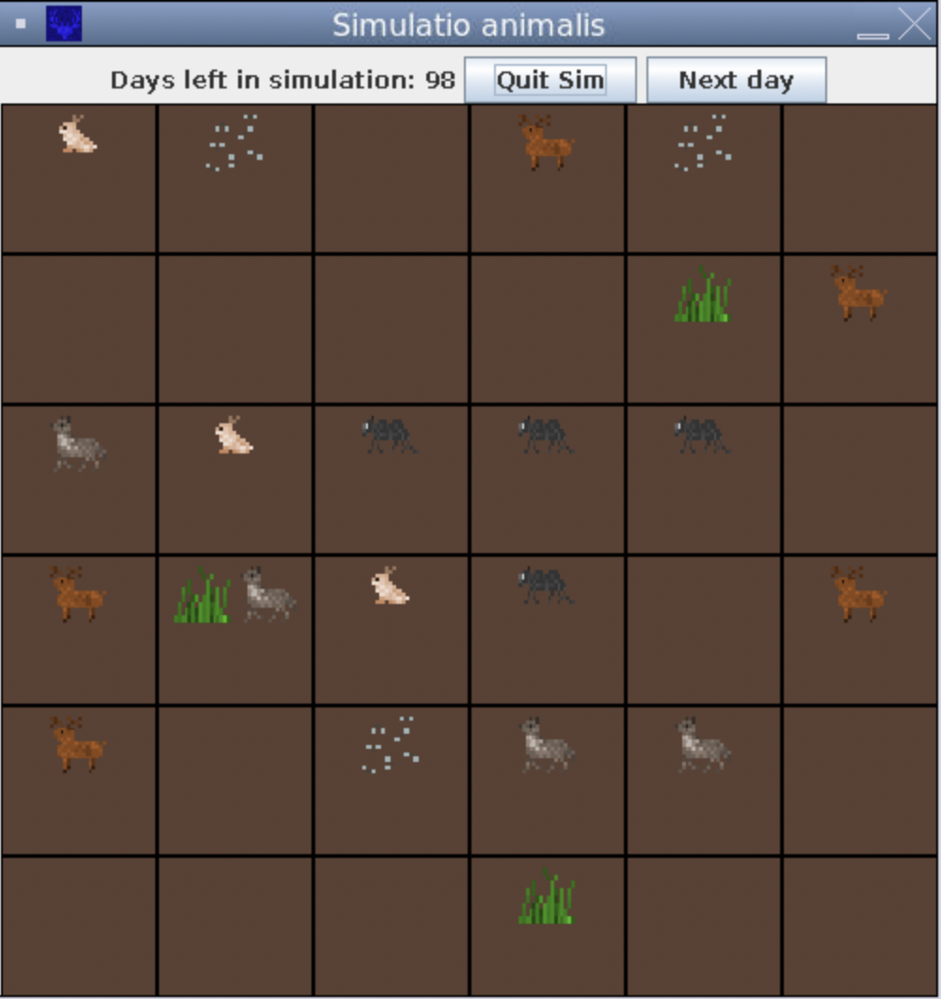
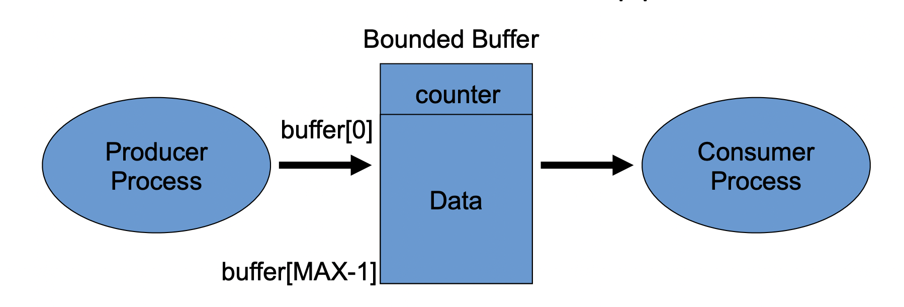

This project was developed with Anne Chen and David Gao for CSCI 4448 "Object Oriented Analysis and Design". The project was intended to be a demonstration of various object-oriented
patterns and design principles. Simulatio Animalis is a simulation of interactions between different species in a generated environment. Different animals depend on different resources - for example, a wolf depends on deer for food as it is a predator - and this drives competition between the populations of animals. Each animal is represented as a graphical object in an environment made up of tiles. The animals move around and interact with other animals and the environment. An end of simulation summary is provided at the end with information such as population statistics and interaction events. At the beginning of the simulation, users are able to provide input to specify how many animals they want in the environment and how many days they would like to run the simulation for. Once they press play, the simulation will run according to the given information and randomized events. Some of the patterns used in Simulatio Animalis include Decorator, which was used to add a "disease" wrapper to objects representing animals so as to demonstrate the spread of disease from interactions between species, and Observer, which was used with a Summary Maker object to keep track of all interactions and events across the simulation.

Menu Screen

Simulation Window
Multithreading
The third lab for CSCI 3753 "Operating Systems" was an exploration of multithreaded programming and resource sharing through the "bounded buffer" problem. The goal was to create a DNS hostname resolver that would find IP addresses for given hostnames. The resolver uses a shared queue where multiple producer and consumer threads could add and process hostnames from a set of input files. Mutexes and sempahores were used to prevent race conditions from occuring within the shared queue, such as to stop multiple conumser threads from accidently reading the same hostname.

Bounded Buffer Problem
TrekSafe
TrekSafe was a semester long project for CSCI 3002 "Fundamentals of Human-Computer Interaction". The project is a demonstration of the design process for a mobile application called TrekSafe, an app and accompanying wrist device intended to keep users safe in the wilderness by offering detailed trail information, weather forecasts, obstacle warnings, and SOS capabilities. A prototype of the app was developed using Figma, and the design was informed with user interviews and research.